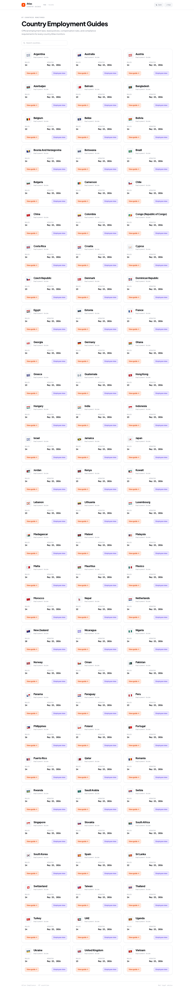
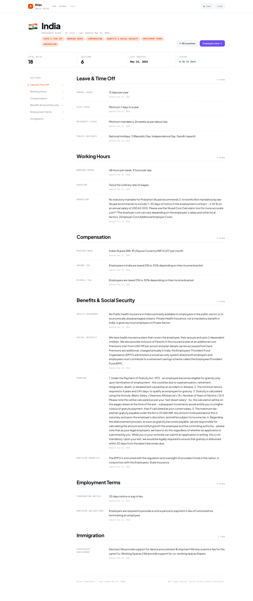

Country Guides¶
The country guide pages are the client-facing output of the reconciliation pipeline — the published, reviewed, and provenance-tracked employment rules that advisors reference when counseling employers.
Guide List¶

The guide list (/guide) displays a card grid of all monitored countries with:
- Country flag emoji
- Total published rule count
- Last-updated date (most recent approval across all sections)
Country Detail¶

Each country page (/guide/<country>) shows the full employment guide organized into 7 categories:
Section Groups¶
| Group | ID | Sections |
|---|---|---|
| Leave & Time Off | leave |
annual_leave, sick_leave, maternity_leave, public_holidays |
| Working Hours | hours |
working_hours, overtime, probation |
| Compensation | compensation |
minimum_wage, income_tax, payroll_tax, withholding_tax |
| Benefits & Social Security | benefits |
health_insurance, social_security, pension, employee_benefits |
| Employment Terms | employment |
termination_notice, employer_obligations, industrial_relations |
| Immigration | immigration |
work_permit, work_visa, expatriate_employment |
| Workplace Safety | safety |
workplace_safety, osh_obligations |
Page Features¶
- Sticky sidebar: Quick navigation between section groups; follows scroll position
- Per-rule metadata: Last-updated timestamp displayed for each rule
- Summary cards: Total rules, sections covered, last update date
- Light/dark mode: Theme toggle in the header
- Source attribution: Each rule traces back to its official source via provenance
Data Source¶
The guide page reads directly from the country_guide table — the single source of truth for active, approved rules. Only rules that have passed through the review workflow appear here.
Monitored Countries¶
| Country | Flag | Status |
|---|---|---|
| India |  |
Active — 7 section groups |
| Australia |  |
Active — 7 section groups |
| Singapore |  |
Active — 7 section groups |
| South Africa |  |
Active — 7 section groups |
| UAE |  |
Active — 7 section groups |
| New Zealand |  |
Active — 7 section groups |
| Philippines |  |
Active — 7 section groups |
| Pakistan |  |
Active — 7 section groups |
API Access¶
For programmatic access to guide data:
| Endpoint | Returns |
|---|---|
GET /api/guide |
All rules across all countries |
GET /api/guide/India |
All rules for India |
GET /api/guide/India/minimum_wage/at?date=2024-09-15 |
Historical rule at a specific date |
GET /api/guide/India/minimum_wage/history |
Full version timeline |